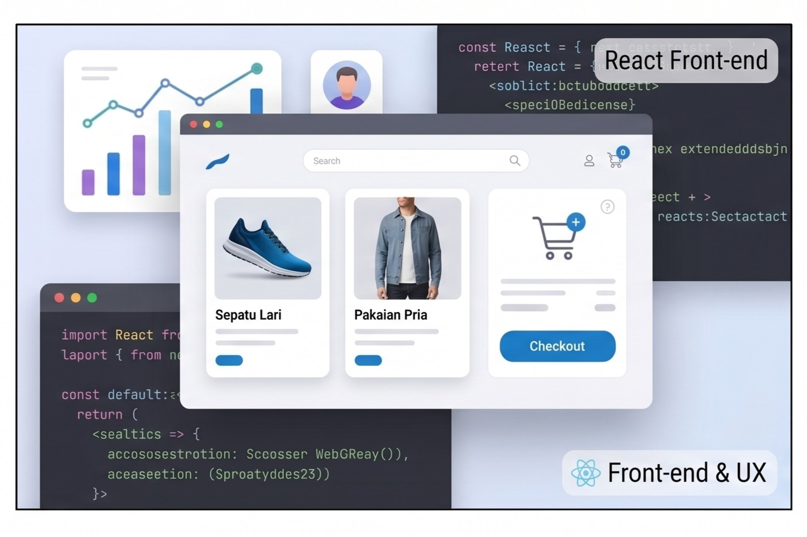

Selamat Datang di
Website Saya
Saya Fullstack Developer yang membantu bisnis dan startup membangun aplikasi web yang cepat, responsif, dan siap berkembang (scalable).

About Me
Saya berfokus pada penulisan kode yang bersih (clean code), performa optimal, serta pengalaman pengguna yang nyaman.
Full Name
Tias Tono Taufik
Education
S1 Arsitektur
Pekerjaan
Freelancer
Contact
topiktono@gmail.com
Hobi
Olahraga, Nonton Film
Alamat
Bogoran RT 04, Trirenggo, Bantul, DIY
Portofolio Pekerjaan
Karya-karya terbaik saya dalam membangun solusi web dan sistem untuk berbagai studi kasus bisnis.

Situs E-Commerce Pakaian
Desain UX modern dan responsif untuk toko online skala penuh. Dilengkapi dengan sistem keranjang, checkout, dan manajemen produk.

Dashboard Analitik & CRM
Integrasi data kompleks dan visualisasi real-time. Membantu klien untuk memonitor metrik bisnis kunci dan keputusan strategis.
Platform API & Microservices
Pengembangan backend yang aman, andal, dan dapat ditingkatkan (scalable). Dibangun menggunakan arsitektur modern berorientasi service.